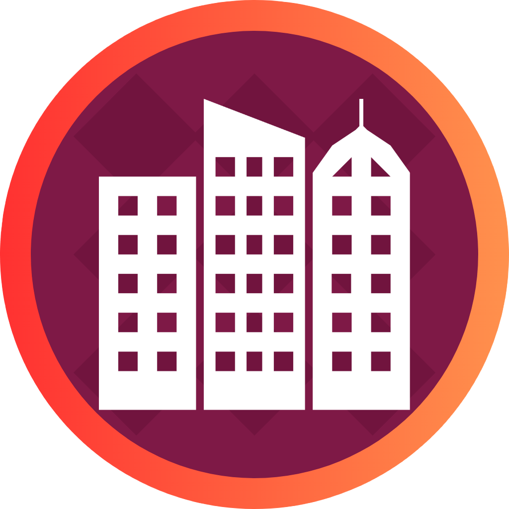

<ion-toolbar color="primary">
  <ion-title><h2>RELEVAMIENTO VISUAL</h2></ion-title>
</ion-toolbar>

<ion-content [fullscreen]="true">
  <div class="login">

    <h1>Bienvenido</h1>
    <h3>Inicie sesión a continuación</h3>
  
    <form class="needs-validation" [formGroup]="formLog">
      
      <ion-input fill="outline" label="Correo" type="email" labelPlacement="floating" formControlName="email"></ion-input>
      <ion-input fill="outline" label="Clave" type="password" labelPlacement="floating" formControlName="password"></ion-input>
      <ion-button color="tertiary" expand="block" (click)="this.iniciarSesion()">Ingresar</ion-button>
    </form>
    
    <div *ngIf="this.cargaFin === true; then mostrar else esperar"></div>

    <ng-template #mostrar>

      <ion-select label="Acceso rápido" fill="outline" interface="popover" labelPlacement="floating" (ionChange)="onQuickUser($event)">
        <ion-select-option *ngFor="let item of arrayTestUsers" [value]="item">{{item.perfil}}</ion-select-option>
      </ion-select>
    </ng-template>
    <ng-template #esperar>

      <ion-select label="Cargando" fill="outline" labelPlacement="floating"></ion-select>
    </ng-template>

    
    <p><span>Desarrollado por Ian Ezequiel Pereyra - 2024</span></p>
  </div>
</ion-content>